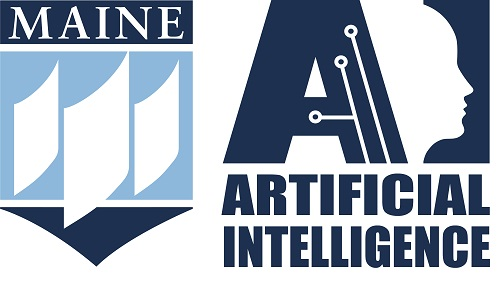

Crowdsourced Insights from the 2025 Maine AI Conference
In addition to expert panels on topics from AI in biomedical research or the legal quandaries of AI images, the 2025 Maine AI Conference offered a novel way to network with other AI thinkers in the region. Attenders voted on topics of interest in real time, and the most compelling themes became hubs for focused conversation. Recurring breakout discussions between panels offered a chance to connect with peers pursuing similar lines of inquiry.
Following the last breakout session, the organizers collected thoughts and questions that attenders added to post-its at each table, then prompted ChatGPT to summarize the key takeaways. The result, compiled below, represents insights to emerge from the range of professions and disciplines represented by participants.
AI’s environmental cost is now a mainstream concern—but not an argument-stopper.
Attendees raised tough but constructive questions about energy use, carbon impact, and whether AI-driven efficiency is worth the tradeoff. These weren’t deal-breakers but calls for more thoughtful design and deployment, suggesting that environmental accountability is becoming a standard expectation, not a fringe worry.
Bias isn’t just a technical problem—it’s a cultural and contextual one.
Comments emphasized that addressing AI bias requires more than better training data; it demands attention to the human contexts around data and decisions. This wasn’t defeatist—it was a reminder that nuance and equity must be part of AI literacy and governance from the start.
AI is reshaping job ladders, not just job counts.
Rather than blanket fears of automation, the Creative/Tech table focused on subtler shifts: juniors struggling to get hired, professionals wondering how to “thread the needle” of AI transformation, and senior developers using tools like Claude to deepen their craft. These are signals of a workplace evolving, not collapsing.
Emerging roles: from coder to curator, writer to editor.
Multiple notes proposed that students and workers alike will need to master overseeing AI—crafting prompts, editing results, and architecting workflows—rather than doing everything from scratch. This reframing sees AI not as a crutch but a catalyst for higher-level thinking.
Educators are rethinking both the what and the why of learning.
Post-its pushed beyond plagiarism panic to ask: How can we use AI to deepen inquiry? What happens if students “do the assignment with AI” and reflect on it? What does authentic assessment mean now? One group even suggested drawing from oral exam traditions to reconnect learning with real-time thought.
Speculative futures like UBI and personal AI agents are now discussion-worthy, not sci-fi.
The suggestion that AI might attend interviews for you or that basic income might be needed weren’t jokes—they were taken seriously as provocative, necessary thought experiments. These show a shift in the conversation from “what is AI doing now?” to “what kind of society do we want as a result?”
AI can amplify creativity—but may also flood the zone.
One note asked whether human-made creative work will gain value in a world of “AI slop.” Others saw AI as a spark for brainstorming and experimentation. The takeaway: creative professionals aren’t just worried—they’re exploring how to stand out and stay relevant.
Students can become bridge-builders—across disciplines, contexts, and AI outputs.
Ideas like using AI to “make connections across distances and disciplines” and introducing “random noise” in the classroom highlight the excitement some educators feel about AI as a partner in expansive, interdisciplinary learning.